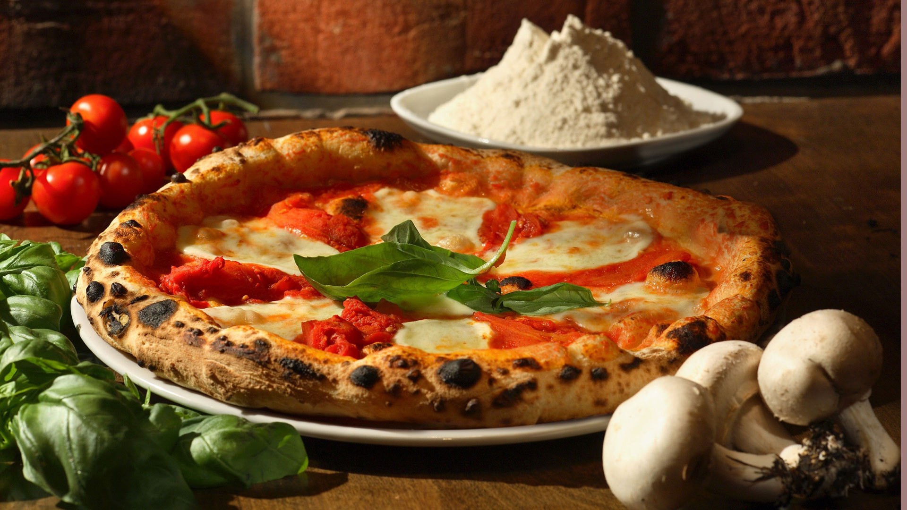

Authentic Margherita Pizza.
A canvas of hand-stretched dough is adorned with vibrant red tomato sauce, a tribute to the sun-soaked Mediterranean fields.
Ingredients.
Dough
- 1 L (4 1/4 cups) water.
- 40 - 60g (1.4 - 2.1 oz) salt
- 3g (1/2 tsp) fresh yeast
- 1,6 - ; 1,8 kg (13 1/3 - 15 cups) flour, 00 type (or, all-purpose)
Sauce
- 1/2 cup water
- 12 ouce Tomato paste
- 1 tsp dried oregano, crushed
- 1 tsp dried basil, crushed
Topping
- 60 - 80g (2.1 - 2.8 oz) canned, peeled tomatoes
- 6 - 7g (1 1/2 tsp) virgin or extra virgin olive oil
- 80 - 100g (2.8 - 3.5 oz) mozzarella/fior di latte
- a few fresh basil leaves
- 5 - 7g (1 1/2 tsp) hard cheese (grated), optional
Directions.
- Dissolve salt in water, then add the yeast to the water and dissolve. Immediately add a portion of the flour to the water and mix. Add the remaining flour in batches, gauging how much flour is enough.
- Knead for a minimum of 15-20 minutes, but ideally, 30 minutes - the dough is of ideal consistency when it's a bit sticky on the hands, and on the sides of a bowl, you're mixing it in.
- Shape it into a ball, then lightly coat with flour, to prevent losing moisture as it rises.
- Place the dough in a large bowl, then cover it with a cloth and store it in a warm place for two hours.
- After two hours have passed, shape the dough into balls weighing either 200 or 280 grams (7-10 oz), depending on the size of the pizza you're making — a 22-24 cm (8.6-9.4-inch) or a 28-35 cm (11-13.5-inch) one.
- Once you've shaped the balls, place them all on a plate and cover them with a damp cloth and let them prove for a minimum of six hours.
- Once at least six hours have passed, take a ball of dough, place it on a lightly floured surface.
- Pressing on the ball of dough with the thumbs of your fingers, starting from the center and going towards the edges, shape into a disc, turning the dough several times in the process.
- As a result of this action, you should end up with a disc that has about a 1-2 cm (1/2-inch) raised rim with a center that should be approximately 0.3 cm (1/8-inch) thick.
- Arrange the topping (the listed amounts are for a single pizza) as follows; First, place the crushed, peeled tomatoes in the center of the pizza, then spread them with a spoon all over, except the rim, in a spiraling fashion.
- Next, scatter the mozzarella or fior di latte evenly over the surface, followed by a sprinkling of hard grated cheese, if you're using it.
- Place a few basil leaves on top, and to finish, drizzle with extra virgin olive oil, which should be applied in a circular motion, starting from the center outwards.
- Place the pizza on a pizza peel and then slide it into a wood-fired oven with a quick wrist motion, so the topping stays in place.
- Bake for 60-90 seconds in a wood-fired oven at a temperature of about 485°C/905°F, checking the doneness by carefully lifting the edges of the pizza.
- Also, the pizza should be rotated as it bakes but kept in the same cooking area, so every part gets baked evenly.